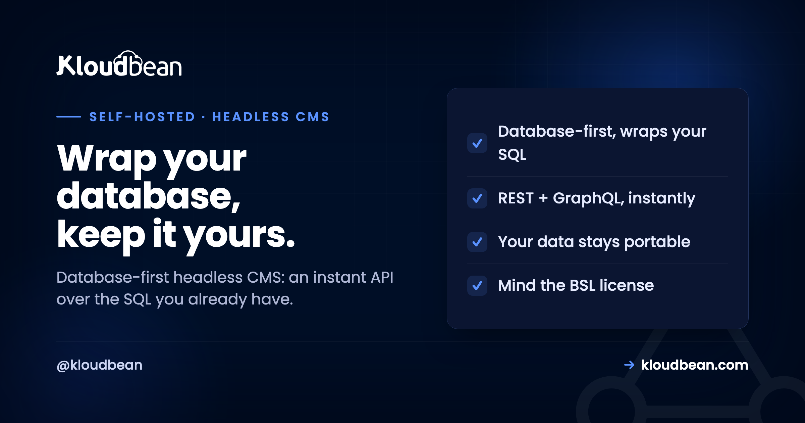

Self-Host Directus: The Database-First Headless CMS (and Its License Catch)

Most headless CMS guides skip the one question that actually decides which tool you should run: does the CMS own your database, or does it wrap the one you already have? Directus takes the second path, and that single design choice is why people pick it. It sits on top of a normal SQL database, new or existing, and turns it into an instant REST and GraphQL API with a clean admin studio, without taking that database hostage. If your data matters more than the tool managing it, that is the pitch. There is also a license detail you need to know before you build on it, and I will not bury it.
Directus is an open-source, database-first headless CMS: instead of creating and owning its own schema, it wraps an existing SQL database (PostgreSQL, MySQL, MariaDB, and others) and gives you an instant REST and GraphQL API plus a no-code admin studio. Self-host it when you already have a database, or when you want your data to stay a normal SQL database that other services can use, rather than being locked inside the CMS. One thing to know up front: Directus uses the Business Source License, so self-hosting is free below a revenue threshold (reported around US$5M) and needs a commercial license above it, which you should verify against current terms. It runs as a standard app on a managed server pointed at a managed database, not as a one-click install.
What Directus actually is
Think of it less as a CMS that stores your content and more as a smart layer over a database you control.
Directus calls itself an open data platform. In practice it is a headless CMS that connects to a SQL database and instantly gives you two things: auto-generated REST and GraphQL APIs over your tables, and a polished no-code admin interface (the Data Studio) for managing the content in them. It supports a wide range of engines, including PostgreSQL, MySQL, MariaDB, SQLite, and several others, and notably it ships WebSockets and GraphQL subscriptions natively for real-time use. It is aimed squarely at developers and technical teams who are comfortable with a database and want a management layer on top without hiding the data.
The word that matters in all of that is "existing." Directus can point at a database that already has tables and data and wrap it as it is, without a migration and without imposing its own structure. That is a genuinely different starting point from most headless systems, and it leads directly to the next section.
The database-first difference (this is the whole decision)
If you take one thing from this article, take this, because it is what separates Directus from the usual choice.
The popular alternative, Strapi, is content-first: you define your content types inside Strapi, and Strapi creates and owns the database schema to match. That is lovely when you are starting a fresh project and want the CMS to handle structure for you. Directus is database-first: the database is the source of truth, and Directus adapts to it. You can bring an existing database, keep using it from other applications, and treat Directus as one consumer of the data rather than its owner.
That distinction changes who should pick what. If your data is the long-lived asset, if other services already read and write it, or if you want the freedom to remove the CMS later without a data migration, database-first wins, and Directus is built for exactly that. If you are greenfield and want the tool to define everything, content-first feels more natural, and self-hosting Strapi is the better read for you. Same category on paper, genuinely different philosophies underneath.
| Directus | Strapi | |
|---|---|---|
| Model | Database-first | Content-first |
| Who owns the schema | Your database does | Strapi does |
| Existing database | Wraps it, no migration | Expects to create its own |
| Data reusable by other apps | Yes, it is a normal SQL DB | Possible, but Strapi owns the shape |
| Best when | You have a database or want data to outlive the CMS | Fresh project, CMS defines structure |
| License | Business Source License (threshold) | Open source core |
The license you must know about before you build
This is the honest catch, and it is better to hear it now than after you have shipped on it.
Directus is not under a permissive open-source license in the way many self-hosted tools are. It uses the Business Source License (BSL). In plain terms, self-hosting Directus is free for organisations below a revenue threshold, reported at around US$5 million in annual revenue or funding, and above that threshold a commercial license is required. Licenses and thresholds change, so treat that figure as a pointer and check Directus's current terms yourself before you commit, especially if you are a funded or growing company.
None of this makes Directus a bad choice, and for the many teams and projects under that threshold it is free to self-host and excellent. But a "self-host it and forget the cost" assumption is exactly how a growing company gets a surprise later, so factor the license into the decision the same way you factor in the database and the server. Knowing it up front is the difference between an informed choice and an awkward one.
What it takes to run
Modest, and pleasantly familiar if you have run a Node app with a database before.
Directus runs as a Node.js application backed by your SQL database, so the two things it needs are a server to run the app and a database to point at. You put it behind a reverse proxy with HTTPS and give it database connection details, and you are essentially there. Because the database is the heart of the whole thing, this is the component to get right: pointing Directus at a managed PostgreSQL or managed MySQL means your data lives on a database that is maintained and backed up, and, in keeping with the database-first idea, remains usable by anything else you build.
File assets (images and uploads managed through Directus) are best kept in object storage rather than on the app server, so the application stays stateless and easy to resize or move. That is the same pattern that keeps any content-driven app snappy under load.
Directus or Strapi? Match the tool to your data
The comparison table above is the summary; here is the reasoning behind it.
Choose Directus when the database comes first: you have an existing SQL database, or you are designing one that other systems will share, or you simply want the option to swap or remove the CMS later without migrating data. Its database-first model and native real-time APIs suit data-driven backends and technical teams. Choose Strapi when the content model comes first: a fresh project where letting the CMS define and own the schema is a feature, not a constraint, and where the large plugin ecosystem is a draw. Neither is better in the abstract. The right answer falls out of one question, who should own the schema, and that question has a clear answer for most projects once you ask it.
Backups, and the portability dividend
With Directus, your backup story and your data-ownership story are the same story, which is a nice property.
Everything lives in the SQL database Directus wraps, so a regular, automatic database dump shipped off the server, with a restore you have tested once, is the core of your safety net, and file uploads in object storage round it out. The general discipline is in the backups guide. The bonus that comes with the database-first model: because your content is a normal SQL database rather than a proprietary store, that same backup is portable. You could restore it elsewhere, point another tool at it, or keep using it if you ever moved on from Directus. Data-first design pays off exactly when you least expect to need it.
Where hosting fits, honestly
Directus is a straightforward app to run on a managed server, and the platform handles the parts that are not the point. You run it as a standard application across any of seven clouds, behind a managed reverse proxy with free auto-renewing SSL, and, most importantly, pointed at a managed PostgreSQL, MySQL, or MariaDB so the database at the centre of everything is maintained and automatically backed up. Object storage holds file assets, and it all lives in one dashboard. It is not a one-click app, but as a Node-app-plus-database it is a well-trodden path.
The honest boundary: the platform runs the server, the database, SSL, and backups. The Directus application, your schema and content, and your compliance with the Business Source License are yours. Managed hosting makes Directus reliable to run and keeps its database safe. It does not decide your license position for you, so keep that one on your own checklist.
Related reading
For the content-first alternative and the full comparison, self-hosting Strapi. For the wider set of tools worth owning, the best self-hosted tools guide. The database underneath is the important part: managed PostgreSQL or managed MySQL, kept safe with server backups, with file assets in object storage. Keeping connection details out of code is covered in environment variables done right.
Run Directus over a database that stays yours.
Host Directus as an app on a managed server across seven clouds, pointed at managed PostgreSQL, MySQL, or MariaDB, with free auto-renewing SSL and automatic backups. Your data stays a normal, portable SQL database. Start at kloudbean.com or see pricing.
Managed server · Managed PostgreSQL / MySQL / MariaDB · Free auto-renewing SSL · Automatic backups
FAQ
What makes Directus different from other headless CMS tools?
It is database-first. Rather than creating and owning its own schema, Directus wraps an existing SQL database and exposes it through instant REST and GraphQL APIs plus a no-code admin studio. That means your data stays a normal database that other services can use, and it can even outlive the CMS. Most alternatives are content-first, defining the schema themselves, which is a different starting point.
Directus or Strapi, which should I self-host?
It comes down to who should own the schema. Choose Directus if you have an existing database, want other systems to share the same data, or want to keep the option of removing the CMS later without a migration. Choose Strapi if you are starting fresh and want the CMS to define and own the content structure, and if its large plugin ecosystem appeals. They are the same category with genuinely different philosophies.
Is Directus free to self-host?
For many, yes, but with an important condition. Directus uses the Business Source License, so self-hosting is free below a revenue threshold, reported at around US$5 million in annual revenue or funding, and requires a commercial license above it. Thresholds and terms change, so verify the current license against Directus's own documentation before building on it, particularly if you are a funded or growing company.
Which databases does Directus support?
A wide range of SQL engines, including PostgreSQL, MySQL, MariaDB, SQLite, and several others. Because it is database-first, it can connect to a brand-new database or an existing one that already has tables and data, wrapping it without a migration. Pointing it at a managed PostgreSQL or MySQL is the cleanest option, since the database is the core of the whole system.
Can Directus use my existing database?
Yes, that is one of its main selling points. Directus can sit on top of an existing SQL database and expose it through APIs and the admin studio without imposing its own structure or requiring a migration. Other applications can keep reading and writing that same database directly, with Directus acting as one consumer of the data rather than its owner.
What does Directus need to run?
It runs as a Node.js application backed by a SQL database, so you need a server for the app and a database to point it at, behind a reverse proxy with HTTPS. It is a standard app-plus-database deployment rather than a one-click install. Keeping file uploads in object storage rather than on the app server keeps it stateless and easy to resize.
How do I back up Directus?
Back up the SQL database, because that is where all your content and structure live, with an automatic dump on a schedule and a restore you have tested once. Keep file uploads in object storage as part of the same routine. A nice side effect of the database-first model is that this backup is portable: it is a normal SQL database you could restore elsewhere or use with another tool.
Is Directus a one-click app on Kloudbean?
No. Directus runs as a standard Node application on a managed server rather than a one-click install. The setup is well understood, though: a right-sized server, a managed PostgreSQL or MySQL for the data, free SSL, and object storage for files. The platform keeps the server and database healthy while the Directus app and your license position remain yours.